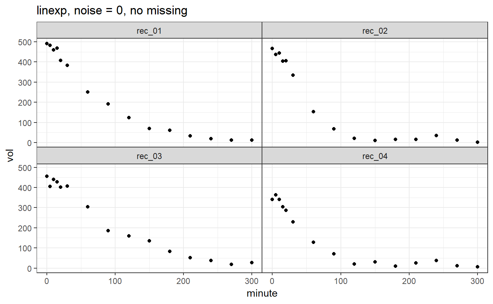
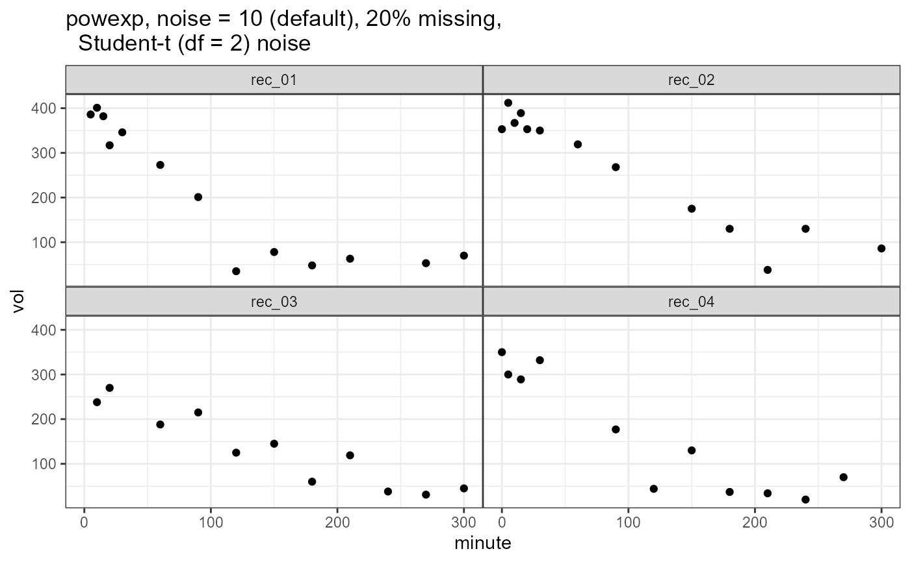

R/simulate_gastempt.R
simulate_gastempt.RdSimulate gastric emptying data following a linexp or powexp function
simulate_gastempt( n_records = 10, v0_mean = 400, v0_std = 50, tempt_mean = ifelse(identical(model, linexp), 60, 120), tempt_std = tempt_mean/3, kappa_mean = 0.7, kappa_std = kappa_mean/3, beta_mean = 0.7, beta_std = beta_mean/3, noise = 20, student_t_df = NULL, missing = 0, model = linexp, seed = NULL, max_minute = NULL )
| n_records | Number of records |
|---|---|
| v0_mean, v0_std | Mean and between record standard deviation of initial volume, typically in ml. |
| tempt_mean, tempt_std | Mean and between record standard deviation of parameter $t_empt$, typically in minutes. |
| kappa_mean, kappa_std | For linexp only: Mean and between-record
standard deviation of overshoot parameter |
| beta_mean, beta_std | For powexp only: Mean and between-record standard deviation of the so called lag parameter. |
| noise | Standard deviation of normal noise when
|
| student_t_df | When NULL (default), Gaussian noise is added; when >= 2, Student_t distributed noise is added, which generates more realistic outliers. Values from 2 to 5 are useful, when higher values are used the result comes close to that of Gaussian noise. Values below 2 are rounded to 2. |
| missing | When 0 (default), all curves have the same number of data points. When > 0, this is the fraction of points that were removed randomly to simulate missing points. Maximum value is 0.5. |
| model | linexp(default) or powexp |
| seed | optional seed; not set if seed = NULL (default) |
| max_minute | Maximal time in minutes; if NULL, a sensible default rounded to hours is used |
A list with 3 elements:
Data frame with columns
record(chr), v0, tempt, kappa/beta giving the effective
linexp or powexp parameters for the individual record.
v0 is rounded to nearest integer.
Data frame with columns
record(chr), minute(dbl), vol(dbl) giving the
time series and grouping parameters. vol is rounded
to nearest integer.
A list for use as data in Stan-based fits
with elements prior_v0, n, n_record, record, minute, volume.
A comment is attached to the return value that can be used as a title
suppressWarnings(RNGversion("3.5.0")) set.seed(4711) library(ggplot2) vol_linexp = simulate_gastempt(n_records = 4, noise = 20) ggplot(vol_linexp$data, aes(x = minute, y = vol)) + geom_point() + facet_wrap(~record) + ggtitle("linexp, noise = 0, no missing")vol_powexp = simulate_gastempt(n_records = 4, missing = 0.2, student_t_df = 2) ggplot(vol_powexp$data, aes(x = minute, y = vol)) + geom_point() + facet_wrap(~record) + ggtitle("powexp, noise = 10 (default), 20% missing, Student-t (df = 2) noise")